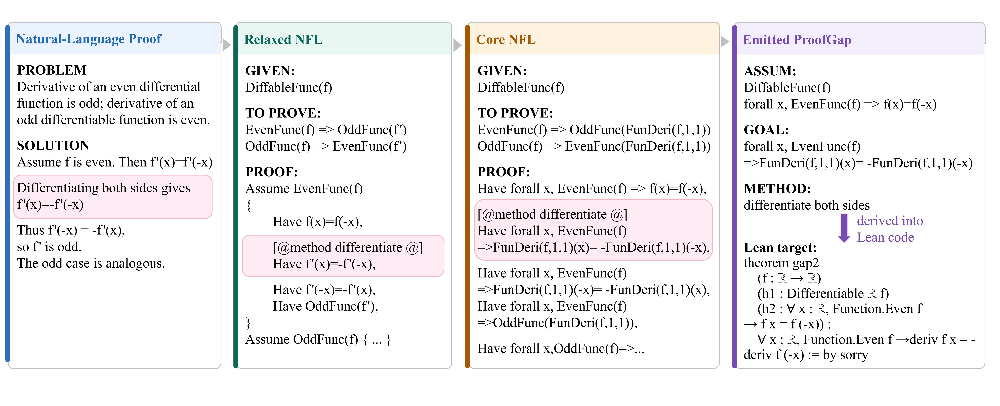

Translates 26,116 step-level proof gaps from analysis textbook solutions into Lean theorem statements with Lean-verified reference proofs, then evaluates provers in Lean.
Abstract
Existing formal mathematics benchmarks, such as miniF2F, ProofNet, and PutnamBench, primarily evaluate models on constructing complete formal proofs for challenging problems. Because success is measured at the theorem level, these benchmarks offer limited insight into models' step-level formal reasoning. Evaluating this capability separately enables finer-grained diagnosis of model limitations than theorem-level evaluation alone. To fill this evaluation gap, we introduce ProofGap, a fine-grained benchmark for step-level formal reasoning. ProofGap is constructed through a natural-language proof-processing pipeline that decomposes each reasoning step into one or more aligned proof gaps. Applying this pipeline to natural-language solutions to 3,015 exercises in B. P. Demidovich's Problems in Mathematical Analysis yields 26,116 gaps. The benchmark focuses on mathematical analysis, a domain that remains challenging for current models. By supplying the local context and target explicitly, gap completion isolates local formal proof construction from end-to-end proof composition, enabling more precise localization of model failures. Natural-language solutions serve as the provenance of these obligations, while the benchmark task itself starts from an already formalized local context and goal. Beyond benchmarking, the same pipeline may support future proof-verification systems, provided that semantic translation and sequential proof composition are handled reliably.
Problem
Formal math benchmarks such as miniF2F, ProofNet and PutnamBench score models only on complete theorems. They give little insight into step-level formal reasoning, which matters for fine-grained verification feedback on natural-language proofs.
Approach
A natural-language proof-processing pipeline decomposes textbook solutions from Demidovich's Problems in Mathematical Analysis into local proof obligations (context, goal, optional method annotation). The pipeline goes through Relaxed and Core NFL intermediate forms. Each gap is translated into a Lean theorem with a Lean-verified reference proof. A separate lightweight 18-command DSL checker with a verifier-guided agent is also provided for the original version.

Figure 1: Construction pipeline from a boxed natural-language reasoning step to a local ProofGap instance. Relaxed NFL preserves the original proof structure and method annotation, while Core NFL makes the implicit universal variables and assumption scopes explicit and normalizes f^{\prime} as FunDeri(f,1,1) , where FunDeri(f,1,1) denotes the first-order derivative of function f with respect to it
Results
The benchmark contains 26,116 gaps from 3,015 exercises. Gaps are far more tractable than full exercise theorems: Goedel-V2-8B solves 35.39% of gaps versus 4.28% of exercise theorems. On the 280-gap subset, GPT-5.6-sol and Claude-Opus-4.8 reach 87.86% pass@8.
Model
All gaps
Tactic-unsolved gaps
Exercise theorems
Goedel-V2-8B
35.39
27.48
4.28
DeepSeek-Prover-7B
33.27
25.16
3.32
Kimina-Distill-8B
31.99
23.57
2.92
Success rate (%) of specialized provers on all gaps, tactic-unsolved gaps, and full exercise theorems